tespy.tools module¶
tespy.tools.analyses module¶
Module for thermodynamic analyses.
The analyses module provides thermodynamic analysis tools for your simulation. Different analysis classes are available:
This file is part of project TESPy (github.com/oemof/tespy). It’s copyrighted by the contributors recorded in the version control history of the file, available from its original location tespy/tools/analyses.py
SPDX-License-Identifier: MIT
- class tespy.tools.analyses.ExergyAnalysis(network, E_F, E_P, E_L=[], internal_busses=[])[source]¶
Bases:
objectClass for exergy analysis of TESPy models.
- Parameters
E_F (float) – List containing busses which represent fuel exergy input of the network, e.g. heat exchangers of the steam generator.
E_P (list) – List containing busses which represent exergy production of the network, e.g. the motors and generators of a power plant.
E_L (list) – Optional: List containing busses which represent exergy loss streams of the network to the ambient, e.g. flue gases of a gas turbine.
internal_busses (list) – Optional: List containing internal busses that represent exergy transfer within your network but neither exergy production or exergy fuel, e.g. a steam turbine driven feed water pump. The conversion factors of the bus are applied to calculate exergy destruction which is allocated to the respective components.
Note
The nomenclature of the variables used in the exergy analysis is according to [Tsa07].
The analysis is carried out by the
tespy.tools.analyses.ExergyAnalysis.analyse()method. Given the ambient state (pressure and temperature), it willCalculate the values of physical exergy on all connections
Calculate exergy balance for all components. The individual exergy balance methods are documented in the API-documentation of the respective components.
Components for which no exergy balance has yet been implemented,
nan(not defined) is assigned for fuel and product exergy as well as exergy destruction and exergetic efficiency.Dissipative components do not have product exergy (
nan) per definition.
Calculate exergy balances for busses passed to ExergyAnalysis class instance.
Calculate network fuel exergy, product exergy as well as exergy loss from data provided by the busses passed to the instance.
Calculate network exergetic efficiency.
Calculate exergy destruction ratios for components.
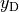
compare the rate of exergy destruction in a component to the exergy rate of the fuel provided to the overall system.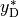
compare the component exergy destruction rate to the total exergy destruction rate within the system.
![\begin{split}
\dot{E}_{\mathrm{D},comp} = \dot{E}_{\mathrm{F},comp} - \dot{E}_{\mathrm{P},comp}
\;& \\
\varepsilon_{\mathrm{comp}} =
\frac{\dot{E}_{\mathrm{P},comp}}{\dot{E}_{\mathrm{F},comp}} \;& \\
\dot{E}_{\mathrm{D}} = \sum_{comp} \dot{E}_{\mathrm{D},comp} \;&
\forall comp \in \text{ network components}\\
\dot{E}_{\mathrm{P}} = \sum_{comp} \dot{E}_{\mathrm{P},comp} \;&
\forall comp \in
\text{ components of busses in E\_P if 'base': 'component'}\\
\dot{E}_{\mathrm{P}} = \dot{E}_{\mathrm{P}} - \sum_{comp} \dot{E}_{\mathrm{F},comp}
\;& \forall comp \in
\text{ components of busses in E\_P if 'base': 'bus'}\\
\dot{E}_{\mathrm{F}} = \sum_{comp} \dot{E}_{\mathrm{F},comp} \;&
\forall comp \in
\text{ components of busses in E\_F if 'base': 'bus'}\\
\dot{E}_{\mathrm{F}} = \dot{E}_{\mathrm{F}} - \sum_{comp} \dot{E}_{\mathrm{P},comp}
\;& \forall comp \in
\text{ components of busses in E\_F if 'base': 'component'}\\
\dot{E}_{\mathrm{L}} = \sum_{comp} \dot{E}_{\mathrm{D},comp} \;&
\forall comp \in
\text{ sinks of network components if parameter exergy='loss'}
\end{split}](../_images/math/4f3534c30fc85ae91e6e5eea3f4f48405ed0c20e.png)
The exergy balance of the network must be closed, meaning fuel exergy minus product exergy, exergy destruction and exergy losses must be zero (
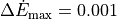
). If the balance is violated a warning message is prompted.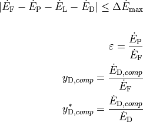
Example
In this example a simple clausius rankine cycle is set up and an exergy analysis is performed after simulation of the power plant. Start by defining ambient state and genereral network setup.
>>> from tespy.components import (CycleCloser, HeatExchangerSimple, ... Merge, Splitter, Valve, Compressor, Pump, Turbine) >>> from tespy.connections import Bus >>> from tespy.connections import Connection >>> from tespy.networks import Network >>> from tespy.tools import ExergyAnalysis
>>> Tamb = 20 >>> pamb = 1 >>> fluids = ['water'] >>> nw = Network(fluids=fluids) >>> nw.set_attr(p_unit='bar', T_unit='C', h_unit='kJ / kg', ... iterinfo=False)
In order to show all functionalities available we use a feed water pump that is not driven electrically by a motor but instead internally by an own steam turbine. Therefore we split up the live steam from the steam generator and merge the streams after both steam turbines. For simplicity the steam generator and the condenser are modeled as simple heat exchangers.
>>> cycle_close = CycleCloser('cycle closer') >>> splitter1 = Splitter('splitter 1') >>> merge1 = Merge('merge 1') >>> turb = Turbine('turbine') >>> fwp_turb = Turbine('feed water pump turbine') >>> condenser = HeatExchangerSimple('condenser') >>> fwp = Pump('pump') >>> steam_generator = HeatExchangerSimple('steam generator')
>>> fs_in = Connection(cycle_close, 'out1', splitter1, 'in1') >>> fs_fwpt = Connection(splitter1, 'out1', fwp_turb, 'in1') >>> fs_t = Connection(splitter1, 'out2', turb, 'in1') >>> fwpt_ws = Connection(fwp_turb, 'out1', merge1, 'in1') >>> t_ws = Connection(turb, 'out1', merge1, 'in2') >>> ws = Connection(merge1, 'out1', condenser, 'in1') >>> cond = Connection(condenser, 'out1', fwp, 'in1') >>> fw = Connection(fwp, 'out1', steam_generator, 'in1') >>> fs_out = Connection(steam_generator, 'out1', cycle_close, 'in1') >>> nw.add_conns(fs_in, fs_fwpt, fs_t, fwpt_ws, t_ws, ws, cond, ... fw, fs_out)
Next step is to set up the busses to later pass them according to the convetions in the list below:
E_F for fuel exergy
E_P for product exergy
internal_busses for internal energy transport
E_L for exergy loss streams to the ambient (sources and sinks go here, in case you use e.g. flue gases or air input)
The first bus is for output power, which is only represented by the main steam turbine. The efficiency is set to 0.97. This bus will represent the product exergy.
>>> power = Bus('power_output') >>> power.add_comps({'comp': turb, 'char': 0.97})
The second bus is for driving the feed water pump. The total power of this bus is specified to be 0 in order to make sure, the power genrated by the secondary steam turbine is transferred to the feed water pump. For mechanical efficiency we choose 0.985 for both components, but we need to make sure, the
'base'of the feed water pump is'bus'as the energy from the turbine drives the feed water pump.>>> fwp_power = Bus('feed water pump power', P=0) >>> fwp_power.add_comps( ... {'comp': fwp_turb, 'char': 0.985}, ... {'comp': fwp, 'char': 0.985, 'base': 'bus'})
The fuel exergy is the exergy input into the network which is represented by the heat input bus. Here again, as we have an energy input from outside of the network, the
'base'keyword must be specified to'bus'.>>> heat = Bus('heat_input') >>> heat.add_comps({'comp': steam_generator, 'base': 'bus'}) >>> nw.add_busses(power, fwp_power, heat)
After setting up the busses, we specify the parameters for components and connections and start the simulation.
>>> turb.set_attr(eta_s=0.9) >>> fwp_turb.set_attr(eta_s=0.87) >>> condenser.set_attr(pr=0.98) >>> fwp.set_attr(eta_s=0.75) >>> steam_generator.set_attr(pr=0.89) >>> fs_in.set_attr(m=10, p=120, T=600, fluid={'water': 1}) >>> cond.set_attr(T=Tamb + 3, x=0) >>> nw.solve('design')
To evaluate the exergy balance of the network, we create an instance of class
tespy.tools.analyses.ExergyAnalysispassing the network to analyse as well as the respective busses. To run the analysis, the ambient state is passed subsequently. The results of the analysis can be printed using thetespy.tools.analyses.ExergyAnalysis.print_results()method. The exergy balance should be closed, if you set up your network analysis correctly. If not, an error is prompted.>>> ean = ExergyAnalysis(network=nw, E_F=[heat], E_P=[power], ... internal_busses=[fwp_power]) >>> ean.analyse(pamb=pamb, Tamb=Tamb) >>> abs(round(ean.network_data['E_F'] - ean.network_data['E_P'] - ... ean.network_data['E_L'] - ean.network_data['E_D'], 3)) 0.0 >>> ();ean.print_results();() (...)
The exergy data of the passed busses, the network’s components and connections as well as the network itself are stored as dataframes and therefore accessible for further investigation.
>>> busses = ean.bus_data >>> components = ean.component_data >>> connections = ean.connection_data >>> network = ean.network_data
Additionally, if you defined component groups for your components, the exergy data of these groups are accumulated and saved in an own DataFrame. Please note, that the exergy destruction values of the busses are allocated to the component groups in this case.
>>> groups = ean.group_data
Lastly, the tool offers an automatically generated data input for the sankey plotting functionalities of the plotly library to create a Grassmann diagram of your network. For more information on the usage of the functionality look up the corresponding method documentation:
tespy.tools.analyses.ExergyAnalysis.generate_plotly_sankey_input(). The method returns a dictionary containting the links for the sankey as well as a list of the nodes.>>> links, nodes = ean.generate_plotly_sankey_input()
- analyse(pamb, Tamb)[source]¶
Run the exergy analysis.
- Parameters
pamb (float) – Ambient pressure value for analysis, provide value in network’s pressure unit.
Tamb (float) – Ambient temperature value for analysis, provide value in network’s temperature unit.
- calculate_group_input_value(group_label)[source]¶
Calculate the total exergy input of a component group.
- evaluate_busses(cp)[source]¶
Evaluate the exergy balances of busses.
- Parameters
cp (tespy.components.component.Component) – Component to analyse the bus exergy balance of.
- generate_plotly_sankey_input(node_order=[], colors={}, display_thresold=0.001)[source]¶
Generate input data for sankey plots.
Only exergy flow above the display threshold is included. All component groups with transit only (one input and one output) are cut out of the display.
- Parameters
node_order (list) – Order for the nodes in the sankey diagram (optional). In case no order is passed, a generic order will be used.
colors (dict) –
Dictionary containing a color for every stream type (optional). Stream type is the key, the color is the corresponding value. Stream types are:
E_F,E_P,E_L,E_Dnames of the pure fluids of the tespy Network
mix(used in case of any gas mixture)labels of internal busses
In case no colors are passed, the matplotlib
Set1colormap will be applied.
- Returns
Tuple containing the links and node_order for the plotly sankey diagram.
- Return type
tuple
- print_results(sort_desc=True, busses=True, components=True, connections=True, groups=True, network=True, aggregation=True)[source]¶
Print the results of the exergy analysis to prompt.
The results are sorted beginning with the component having the biggest exergy destruction by default.
Components with an exergy destruction smaller than 1000 W is not printed to prompt by default.
- Parameters
sort_des (boolean) – Sort the component results descending by exergy destruction.
busses (boolean) – Print bus results, default value
True.components (boolean) – Print component results, default value
True.connections (boolean) – Print connection results, default value
True.network (boolean) – Print network results, default value
True.aggregation (boolean) – Print aggregated component results, default value
True.
- remove_transit_groups(group_data)[source]¶
Remove transit only component groups from sankey display.
Method is recursively called if a group was removed from display to catch cases, where multiple groups are attached in line without any streams leaving the line.
- Parameters
group_data (dict) – Dictionary containing the modified component group data.
tespy.tools.characteristics module¶
Module for characteristic functions.
The characteristics module provides the integration of characteristic lines and characteristic maps. The user can create custom characteristic lines or maps with individual data.
This file is part of project TESPy (github.com/oemof/tespy). It’s copyrighted by the contributors recorded in the version control history of the file, available from its original location tespy/tools/characteristics.py
SPDX-License-Identifier: MIT
- class tespy.tools.characteristics.CharLine(x=array([0, 1]), y=array([1., 1.]), extrapolate=False)[source]¶
Bases:
objectClass for characteristc lines.
- Parameters
x (ndarray) – An array for the x-values of the lookup table. Number of x and y values must be identical.
y (ndarray) – The corresponding y-values for the lookup table. Number of x and y values must be identical.
extrapolate (boolean) – If
Truelinear extrapolation is performed when the x value is out of the defined value range.
Note
This class generates a lookup table from the given input data x and y, then performs linear interpolation. The x and y values may be specified by the user. There are some default characteristic lines for different components, see the
tespy.datamodule. If you neither specify the method to use from the defaults nor specify x and y values, the characteristic line generated will bex = [0, 1], y = [1, 1].- evaluate(x)[source]¶
Return characteristic line evaluation at x.
- Parameters
x (float) – Input value for linear interpolation.
- Returns
y – Evaluation of characteristic line at x.
- Return type
float
Note
This methods checks for the value range first. If
extrapolateisFalse(default) and the x-value is outside of the specified range, the function will return the values at the corresponding boundary. IfextrapolateisTruethe y-value is calculated by linear extrapolation.
where the index
 represents the lower and
represents the lower and  the
upper adjacent x-value.
the
upper adjacent x-value.  and
and  are the
corresponding y-values. On extrapolation the two smallest or the two
largest value pairs are used respectively.
are the
corresponding y-values. On extrapolation the two smallest or the two
largest value pairs are used respectively.
- get_attr(key)[source]¶
Get the value of an attribute.
- Parameters
key (str) – Object attribute to get value of.
- Returns
value – Value of object attribute key.
- Return type
object
- class tespy.tools.characteristics.CharMap(x=array([0, 1]), y=array([[1., 1.], [1., 1.]]), z=array([[1., 1.], [1., 1.]]))[source]¶
Bases:
objectClass for characteristic maps.
- Parameters
x (ndarray) – An array for the first dimension input of the map.
y (ndarray) – A two-dimensional array of the second dimension input of the map.
z (ndarray) – A two-dimensional array of the output of the map.
Note
This class generates a lookup table from the given input data x, y and z, then performs linear interpolation. The output parameter is z to be calculated as functions from x and y.
- evaluate(x, y)[source]¶
Evaluate CharMap for x and y inputs.
- Parameters
x (float) – Input for first dimension of CharMap.
y (float) – Input for second dimension of CharMap.
- Returns
z – Resulting z value.
- Return type
float
Note
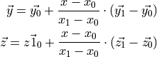
The index
0represents the lower and1the upper adjacent x-value. Using the y-value as second input dimension the corresponding z-values are calculated, again using linear interpolation.
- evaluate_x(x)[source]¶
Evaluate CharMap for x inputs.
- Parameters
x (float) – Input for first dimension of CharMap.
- Returns
yarr (ndarray) – Second dimension input array of CharMap calculated from first dimension input.
zarr (ndarray) – Output array of CharMap calculated from first dimension input.
- evaluate_y(y, yarr, zarr)[source]¶
Evaluate CharMap for y inputs.
- Parameters
y (float) – Input for second dimension of CharMap.
yarr (ndarray) – Second dimension array of CharMap calculated from first dimension input.
zarr (ndarray) – Output array of CharMap calculated from first dimension input.
- get_attr(key)[source]¶
Get the value of an attribute.
- Parameters
key (str) – Object attribute to get value of.
- Returns
value – Value of object attribute key.
- Return type
object
- get_domain_errors(x, y, c)[source]¶
Check the CharMap for bound violations.
- Parameters
x (float) – Input for first dimension of CharMap.
y (float) – Input for second dimension of CharMap.
- get_domain_errors_x(x, c)[source]¶
Prompt error message, if operation is out bounds in first dimension.
- Parameters
x (float) – Input for first dimension of CharMap.
c (str) – Label of the component, the CharMap is applied on.
- Returns
yarr – Second dimension input array of CharMap calculated from first dimension input.
- Return type
ndarray
- get_domain_errors_y(y, yarr, c)[source]¶
Prompt error message, if operation is out bounds in second dimension.
- Parameters
y (float) – Input for second dimension of CharMap.
yarr (ndarray) – Second dimension input array of CharMap calculated from first dimension input.
c (str) – Label of the component, the CharMap is applied on.
- tespy.tools.characteristics.load_custom_char(name, char_type)[source]¶
Load a characteristic line of map.
- Parameters
name (str) – Name of the characteristics.
char_type (class) – Class to be generate the object of.
- Returns
obj – The characteristics (CharLine, CharMap) object.
- Return type
object
- tespy.tools.characteristics.load_default_char(component, parameter, function_name, char_type)[source]¶
Load a characteristic line of map.
- Parameters
component (str) – Type of component.
parameter (str) – Component parameter using the characteristics.
function_name (str) – Name of the characteristics.
char_type (class) – Class to generate an instance of.
- Returns
obj – The characteristics (CharLine, CharMap) object.
- Return type
object
tespy.tools.data_containers module¶
Module for data container classes.
The DataContainer class and its subclasses are used to store component or connection properties.
This file is part of project TESPy (github.com/oemof/tespy). It’s copyrighted by the contributors recorded in the version control history of the file, available from its original location tespy/tools/data_containers.py
SPDX-License-Identifier: MIT
- class tespy.tools.data_containers.ComponentCharacteristicMaps(**kwargs)[source]¶
Bases:
tespy.tools.data_containers.DataContainerData container for characteristic maps.
- Parameters
func (tespy.components.characteristics.characteristics) – Function to be applied for this characteristic map, default: None.
is_set (boolean) – Should this equation be applied?, default: is_set=False.
param (str) – Which parameter should be applied as the x value? default: method=’default’.
- class tespy.tools.data_containers.ComponentCharacteristics(**kwargs)[source]¶
Bases:
tespy.tools.data_containers.DataContainerData container for component characteristics.
- Parameters
func (tespy.components.characteristics.characteristics) – Function to be applied for this characteristics, default: None.
is_set (boolean) – Should this equation be applied?, default: is_set=False.
param (str) – Which parameter should be applied as the x value? default: method=’default’.
- class tespy.tools.data_containers.ComponentProperties(**kwargs)[source]¶
Bases:
tespy.tools.data_containers.DataContainerData container for component properties.
- Parameters
val (float) – Value for this component attribute, default: val=1.
val_SI (float) – Value in SI_unit (available for temperatures only, unit transformation according to network’s temperature unit), default: val_SI=0.
is_set (boolean) – Has the value for this attribute been set?, default: is_set=False.
is_var (boolean) – Is this attribute part of the system variables?, default: is_var=False.
d (float) – Interval width for numerical calculation of partial derivative towards this attribute, it is part of the system variables, default d=1e-4.
min_val (float) – Minimum value for this attribute, used if attribute is part of the system variables, default: min_val=1.1e-4.
max_val (float) – Maximum value for this attribute, used if attribute is part of the system variables, default: max_val=1e12.
- class tespy.tools.data_containers.DataContainer(**kwargs)[source]¶
Bases:
objectThe DataContainer is parent class for all data containers.
- Parameters
**kwargs – See the class documentation of desired DataContainer for available keywords.
Note
The initialisation method (
__init__), setter method (set_attr) and getter method (get_attr) are used for instances of class DataContainer and its children. TESPy uses differentDataContainerclasses for specific objectives:component characteristics
tespy.tools.data_containers.ComponentCharacteristicscomponent characteristic maps
tespy.tools.data_containers.ComponentCharacteristicMapscomponent properties
tespy.tools.data_containers.ComponentPropertiesgrouped component properites
tespy.tools.data_containers.GroupedComponentPropertiesfluid composition
tespy.tools.data_containers.FluidCompositionfluid properties
tespy.tools.data_containers.FluidProperties
Grouped component properties are used, if more than one component property has to be specified in order to apply one equation, e.g. pressure drop in pipes by specified length, diameter and roughness. If you specify all three of these properties, the DataContainer for the group will be created automatically!
For the full list of available parameters for each data container, see its documentation.
Example
The examples below show the different (sub-)classes of DataContainers available.
>>> from tespy.tools.data_containers import ( ... ComponentCharacteristics, ComponentCharacteristicMaps, ... ComponentProperties, FluidComposition, GroupedComponentProperties, ... FluidProperties, DataContainerSimple) >>> from tespy.components import Pipe >>> type(ComponentCharacteristicMaps(is_set=True)) <class 'tespy.tools.data_containers.ComponentCharacteristicMaps'> >>> type(ComponentCharacteristics(is_set=True, param='m')) <class 'tespy.tools.data_containers.ComponentCharacteristics'> >>> type(ComponentProperties(val=100, is_set=True, is_var=True, ... max_val=1000, min_val=1)) <class 'tespy.tools.data_containers.ComponentProperties'> >>> pi = Pipe('testpipe', L=100, D=0.5, ks=5e-5) >>> type(GroupedComponentProperties(is_set=True, ... elements=[pi.L, pi.D, pi.ks], method='default')) <class 'tespy.tools.data_containers.GroupedComponentProperties'> >>> type(FluidComposition( ... val={'CO2': 0.1, 'H2O': 0.11, 'N2': 0.75, 'O2': 0.03}, ... val_set={'CO2': False, 'H2O': False, 'N2': False, 'O2': True}, ... balance=False)) <class 'tespy.tools.data_containers.FluidComposition'> >>> type(FluidProperties(val=5, val_SI=500000, val_set=True, unit='bar', ... ref=None, ref_set=False)) <class 'tespy.tools.data_containers.FluidProperties'> >>> type(DataContainerSimple(val=5, is_set=False)) <class 'tespy.tools.data_containers.DataContainerSimple'>
- static attr()[source]¶
Return the available attributes for a DataContainer type object.
- Returns
out – Dictionary of available attributes (dictionary keys) with default values.
- Return type
dict
- class tespy.tools.data_containers.DataContainerSimple(**kwargs)[source]¶
Bases:
tespy.tools.data_containers.DataContainerSimple data container without data type restrictions to val field.
- Parameters
val (no specific datatype) – Value for the property, no predefined datatype.
is_set (boolean) – Has the value for this property been set? default: val_set=False.
- class tespy.tools.data_containers.FluidComposition(**kwargs)[source]¶
Bases:
tespy.tools.data_containers.DataContainerData container for fluid composition.
- Parameters
val (dict) – Mass fractions of the fluids in a mixture, default: val={}. Pattern for dictionary: keys are fluid name, values are mass fractions.
val0 (dict) – Starting values for mass fractions of the fluids in a mixture, default: val0={}. Pattern for dictionary: keys are fluid name, values are mass fractions.
val_set (dict) – Which fluid mass fractions have been set, default val_set={}. Pattern for dictionary: keys are fluid name, values are True or False.
balance (boolean) – Should the fluid balance equation be applied for this mixture? default: False.
- class tespy.tools.data_containers.FluidProperties(**kwargs)[source]¶
Bases:
tespy.tools.data_containers.DataContainerData container for fluid properties.
- Parameters
val (float) – Value in user specified unit (or network unit) if unit is unspecified, default: val=np.nan.
val0 (float) – Starting value in user specified unit (or network unit) if unit is unspecified, default: val0=np.nan.
val_SI (float) – Value in SI_unit, default: val_SI=0.
val_set (boolean) – Has the value for this property been set? default: val_set=False.
ref (tespy.connections.ref) – Reference object, default: ref=None.
ref_set (boolean) – Has a value for this property been referenced to another connection? default: ref_set=False.
unit (boolean) – Unit for this property, default: ref=None.
unit – Has the unit for this property been specified manually by the user? default: unit_set=False.
- class tespy.tools.data_containers.GroupedComponentCharacteristics(**kwargs)[source]¶
Bases:
tespy.tools.data_containers.DataContainerData container for grouped component characteristics.
- Parameters
is_set (boolean) – Should the equation for this parameter group be applied? default: is_set=False.
elements (list) – Which component properties are part of this component group? default elements=[].
- class tespy.tools.data_containers.GroupedComponentProperties(**kwargs)[source]¶
Bases:
tespy.tools.data_containers.DataContainerData container for grouped component parameters.
- Parameters
is_set (boolean) – Should the equation for this parameter group be applied? default: is_set=False.
method (str) – Which calculation method for this parameter group should be used? default: method=’default’.
elements (list) – Which component properties are part of this component group? default elements=[].
tespy.tools.document_models module¶
Module for helper functions used by several other modules.
This file is part of project TESPy (github.com/oemof/tespy). It’s copyrighted by the contributors recorded in the version control history of the file, available from its original location tespy/tools/document_models.py
SPDX-License-Identifier: MIT
- tespy.tools.document_models.create_latex_CharLine(component, param, data, path, group=None)[source]¶
Generate image and create LaTeX code for CharLine documentation.
- Parameters
component (object) – Component or Bus object the characteristics are applied on.
param (str) – Name of the parameter holding the CharLine information.
data (tespy.tools.data_containers.ComponentCharacteristics) – DataContainer holding the CharLine information.
path (str) – Basepath of the report.
group (str) – Name of the group if the parameter is part of a group, else None.
- Returns
latex – LaTeX code for figure.
- Return type
str
- tespy.tools.document_models.create_latex_CharMap(component, param, data, path, group=None)[source]¶
Generate image and create LaTeX code for CharMap documentation.
- Parameters
component (object) – Component or Bus object the characteristics are applied on.
param (str) – Name of the parameter holding the CharLine information.
data (tespy.tools.data_containers.ComponentCharacteristicMaps) – DataContainer holding the CharMap information.
path (str) – Basepath of the report.
group (str) – Name of the group if the parameter is part of a group, else None.
- Returns
latex – LaTeX code for figure.
- Return type
str
- tespy.tools.document_models.create_latex_figure(path, caption, label)[source]¶
Create LaTeX figure environment.
- Parameters
path (str) – Path to the figure.
caption (str) – Caption of the figure.
label (str) – LaTeX label for the figure.
- Returns
latex – LaTeX code for figure.
- Return type
str
- tespy.tools.document_models.create_latex_table(df, caption, col_fmt=None)[source]¶
Create LaTeX table environment from DataFrame df.
- Parameters
df (pandas.core.frame.DataFrame) – DataFrame to export.
caption (str) – Caption for the table.
- Returns
latex – LaTeX code for table.
- Return type
str
- tespy.tools.document_models.data_to_df(data)[source]¶
Create pandas DataFrame from list of dictionaries, remove nan columns.
- Parameters
data (list) – Rows for the DataFrame.
- Returns
df – Polished DataFrame.
- Return type
pandas.core.frame.DataFrame
- tespy.tools.document_models.document_busses(nw, rpt)[source]¶
Document bus specifications.
- Parameters
nw (tespy.networks.network.Network) – TESPy model.
rpt (dict) – Formatting data for the report.
- Returns
latex – LaTeX code for all busses.
- Return type
str
- tespy.tools.document_models.document_components(nw, rpt)[source]¶
Document component specifications.
- Parameters
nw (tespy.networks.network.Network) – TESPy model.
rpt (dict) – Formatting data for the report.
- Returns
latex – LaTeX code for all components.
- Return type
str
- tespy.tools.document_models.document_connection_fluids(df, specs, eqs, c, rpt)[source]¶
Document fluid specifications of connections.
- Parameters
df (pandas.core.frame.DataFrame) – DataFrame containing the connection fluid data.
specs (pandas.core.frame.DataFrame) – DataFrame containing information on model input specifications.
eqs (list) – List of parameters to generate equations for.
c (tespy.connections.connection.Connection) – Connection object, required for LaTeX equation generation.
rpt (dict) – Formatting data for the report.
- Returns
latex – LaTeX code for all connections.
- Return type
str
- tespy.tools.document_models.document_connection_params(nw, df, specs, eqs, c, rpt)[source]¶
Document parameter specification of connections.
- Parameters
nw (tespy.networks.network.Network) – Network object for unit information.
df (pandas.core.frame.DataFrame) – DataFrame containing the connection parameter data.
specs (pandas.core.frame.DataFrame) – DataFrame containing information on model input specifications.
eqs (list) – List of parameters to generate equations for.
c (tespy.connections.connection.Connection) – Connection object, required for LaTeX equation generation.
rpt (dict) – Formatting data for the report.
- Returns
latex – LaTeX code for all connections.
- Return type
str
- tespy.tools.document_models.document_connection_ref(df, property, c)[source]¶
Document referenced connection properties
- Parameters
df (pandas.core.frame.DataFrame) – DataFrame containing the referenced connection data.
property (str) – Short name of specified property (
'm', 'p', ...).c (tespy.connections.connection.Connection) – Connection object, required for LaTeX equation generation.
- Returns
latex – LaTeX code for all connections.
- Return type
str
- tespy.tools.document_models.document_connections(nw, rpt)[source]¶
Document connection specifications.
- Parameters
nw (tespy.networks.network.Network) – TESPy model.
rpt (dict) – Formatting data for the report.
- Returns
latex – LaTeX code for all connections.
- Return type
str
- tespy.tools.document_models.document_model(nw, path='report', filename='report.tex', fmt={})[source]¶
Generate LaTeX documentation for a TESPy model.
The documentation is stored at path/filename
Generated figures are stored at path/figures/
- Parameters
nw (tespy.networks.network.Network) – Network instance to document.
path (str) – Folder for the documentation, default
report.filename (str) – Desired filename for the LaTeX document, default
report.tex.fmt (dict) – Dictionary for formatting the report, for sample see respective section in online documentation.
- tespy.tools.document_models.document_software_info(rpt)[source]¶
Get software information.
- Parameters
rpt (dict) – Formatting data for the report.
- Returns
latex – LaTeX code for software information.
- Return type
str
- tespy.tools.document_models.document_ude(nw, path)[source]¶
Document UserDefinedEquation specifications.
- Parameters
nw (tespy.networks.network.Network) – TESPy model.
path (str) – Folder for the documentation, default
report.
- Returns
latex – LaTeX code for all UserDefinedEquations.
- Return type
str
- tespy.tools.document_models.generate_latex_eq(obj, eqn, label)[source]¶
Generate LaTeX code for equations.
- Parameters
obj (object) – Object equation is applied for.
eqn (str) – LaTeX code of the equation core.
label (str) – LaTeX label for the equation.
- Returns
latex – LaTeX code for equation.
- Return type
str
- tespy.tools.document_models.get_char_specification(component, param, data, path, group=None)[source]¶
Get CharLine or CharMap plotting latex code.
- Parameters
component (object) – Component or Bus object the characteristics are applied on.
param (str) – Name of the parameter holding the CharLine information.
data (tespy.tools.data_containers.DataContainer) – DataContainer holding the CharMap or CharLine information.
path (str) – Basepath of the report.
group (str) – Name of the group if the parameter is part of a group, else None.
- Returns
latex – LaTeX code for characteristic figures.
- Return type
str
- tespy.tools.document_models.get_component_mandatory_constraints(cp, component_list, path)[source]¶
Get latex code for mandatory constraints of component type cp.
- Parameters
cp (str) – Classname of the current class.
component_list (pandas.core.frame.DataFrame) – DataFrame of the components of Class cp.
path (str) – Folder for the documentation, default
report.
- Returns
latex – LaTeX code for mandatory component constraints.
- Return type
str
- tespy.tools.document_models.get_component_specifications(nw, cp, rpt)[source]¶
Get latex code for component specifications of component type cp.
- Parameters
cp (str) – Classname of the current class.
component_list (pandas.core.frame.DataFrame) – DataFrame of the components of Class cp.
rpt (dict) – Formatting data for the report.
- Returns
latex – LaTeX code for component parameter specification.
- Return type
str
- tespy.tools.document_models.place_figures(figures)[source]¶
Generate LaTeX code for figure placement.
- Parameters
figures (list) – List holding LaTeX code of individual figures to be placed in document.
- Returns
latex – LaTeX code for figure alignment.
- Return type
str
- tespy.tools.document_models.set_defaults(nw)[source]¶
Set up defaults for report formatting.
- Parameters
nw (tespy.networks.network.Network) – TESPy Network instance.
- Returns
rpt – Dictionary containting the default formatting data.
- Return type
dict
tespy.tools.fluid_properties module¶
Module for fluid property integration.
TESPy uses the CoolProp python interface for all fluid property functions.
This file is part of project TESPy (github.com/oemof/tespy). It’s copyrighted by the contributors recorded in the version control history of the file, available from its original location tespy/tools/fluid_properties.py
SPDX-License-Identifier: MIT
- class tespy.tools.fluid_properties.Memorise[source]¶
Bases:
objectMemorization of fluid properties.
- T_ph = {}¶
- T_ps = {}¶
- static add_fluids(fluids, memorise_fluid_properties=True)[source]¶
Add list of fluids to fluid memorisation class.
Generate arrays for fluid property lookup if memorisation is activated.
Calculate/set fluid property value ranges for convergence checks.
- Parameters
fluids (dict) – Dict of fluid and corresponding CoolProp back end for fluid property memorization.
memorise_fluid_properties (boolean) – Activate or deactivate fluid property value memorisation. Default state is activated (
True).
Note
The Memorise class creates globally accessible variables for different fluid property calls as dictionaries:
T(p,h)
T(p,s)
v(p,h)
visc(p,h)
s(p,h)
Each dictionary uses the list of fluids passed to the Memorise class as identifier for the fluid property memorisation. The fluid properties are stored as numpy array, where each column represents the mass fraction of the respective fluid and the additional columns are the values for the fluid properties. The fluid property function will then look for identical fluid property inputs (p, h, (s), fluid mass fraction). If the inputs are in the array, the first column of that row is returned, see example.
Example
T(p,h) for set of fluids (‘water’, ‘air’):
row 1: [282.64527752319697, 10000, 40000, 1, 0]
row 2: [284.3140698256616, 10000, 47000, 1, 0]
- back_end = {}¶
- static del_memory(fluids)[source]¶
Delete non frequently used fluid property values from memorise class.
- Parameters
fluids (list) – List of fluid for fluid property memorization.
- s_ph = {}¶
- state = {}¶
- v_ph = {}¶
- value_range = {}¶
- visc_ph = {}¶
- tespy.tools.fluid_properties.Q_ph(p, h, fluid)[source]¶
Calculate vapor mass fraction from pressure and enthalpy for a pure fluid.
- Parameters
p (float) – Pressure p / Pa.
h (float) – Specific enthalpy h / (J/kg).
fluid (str) – Fluid name.
- Returns
x – Vapor mass fraction.
- Return type
float
- tespy.tools.fluid_properties.T_bp_p(flow)[source]¶
Calculate temperature from boiling point pressure.
- Parameters
flow (list) – Fluid property vector containing mass flow, pressure, enthalpy and fluid composition.
- Returns
T – Temperature at boiling point.
- Return type
float
Note
This function works for pure fluids only!
- tespy.tools.fluid_properties.T_mix_ph(flow, T0=675)[source]¶
Calculate the temperature from pressure and enthalpy.
- Parameters
flow (list) – Fluid property vector containing mass flow, pressure, enthalpy and fluid composition.
- Returns
T – Temperature T / K.
- Return type
float
Note
First, check if fluid property has been memorised already. If this is the case, return stored value, otherwise calculate value and store it in the memorisation class.
Uses CoolProp interface for pure fluids, newton algorithm for mixtures:
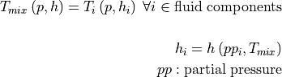
- tespy.tools.fluid_properties.T_mix_ps(flow, s, T0=675)[source]¶
Calculate the temperature from pressure and entropy.
- Parameters
flow (list) – Fluid property vector containing mass flow, pressure, enthalpy and fluid composition.
s (float) – Entropy of flow in J / (kgK).
- Returns
T – Temperature T / K.
- Return type
float
Note
First, check if fluid property has been memorised already. If this is the case, return stored value, otherwise calculate value and store it in the memorisation class.
Uses CoolProp interface for pure fluids, newton algorithm for mixtures:
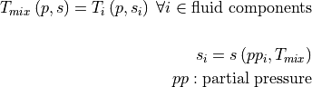
- tespy.tools.fluid_properties.T_ph(p, h, fluid)[source]¶
Calculate the temperature from pressure and enthalpy for a pure fluid.
- Parameters
p (float) – Pressure p / Pa.
h (float) – Specific enthalpy h / (J/kg).
fluid (str) – Fluid name.
- Returns
T – Temperature T / K.
- Return type
float
- tespy.tools.fluid_properties.T_ps(p, s, fluid)[source]¶
Calculate the temperature from pressure and entropy for a pure fluid.
- Parameters
p (float) – Pressure p / Pa.
s (float) – Specific entropy h / (J/(kgK)).
fluid (str) – Fluid name.
- Returns
T – Temperature T / K.
- Return type
float
- tespy.tools.fluid_properties.calc_physical_exergy(conn, p0, T0)[source]¶
Calculate specific physical exergy.
Physical exergy is allocated to a thermal and a mechanical share according to [MT19].
- Parameters
conn (tespy.connections.connection.Connection) – Connection to calculate specific physical exergy for.
p0 (float) – Ambient pressure p0 / Pa.
T0 (float) – Ambient temperature T0 / K.
- Returns
e_ph – Specific thermal and mechanical exergy (
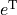
,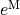
) in J / kg.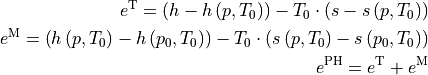
- Return type
tuple
- tespy.tools.fluid_properties.cond_check(y_i, x_i, p, n, T)[source]¶
_summary_
- Parameters
y_i (dict) – Mass specific fluid composition.
x_i (dict) – Mole specific fluid composition.
p (float) – Pressure of mass flow.
n (float) – Molar mass flow.
T (float) – Temperatrure of mass flow.
- Returns
Tuple containing gasphase mass specific and molar specific compositions and overall liquid water mass fraction.
- Return type
tuple
- tespy.tools.fluid_properties.dT_bp_dp(flow)[source]¶
Calculate partial derivate of temperature to boiling point pressure.
- Parameters
flow (list) – Fluid property vector containing mass flow, pressure, enthalpy and fluid composition.
- Returns
dT / dp – Partial derivative of temperature to boiling point pressure in K / Pa.
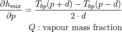
- Return type
float
Note
This works for pure fluids only!
- tespy.tools.fluid_properties.dT_mix_dph(flow, T0=675)[source]¶
Calculate partial derivate of temperature to pressure.
- Parameters
flow (list) – Fluid property vector containing mass flow, pressure, enthalpy and fluid composition.
- Returns
dT / dp – Partial derivative of temperature to pressure dT /dp / (K/Pa).
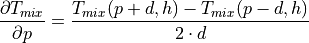
- Return type
float
- tespy.tools.fluid_properties.dT_mix_pdh(flow, T0=675)[source]¶
Calculate partial derivate of temperature to enthalpy.
- Parameters
flow (list) – Fluid property vector containing mass flow, pressure, enthalpy and fluid composition.
- Returns
dT / dh – Partial derivative of temperature to enthalpy dT /dh / ((kgK)/J).
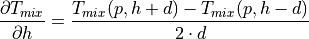
- Return type
float
- tespy.tools.fluid_properties.dT_mix_ph_dfluid(flow, T0=675)[source]¶
Calculate partial derivate of temperature to fluid composition.
- Parameters
flow (list) – Fluid property vector containing mass flow, pressure, enthalpy and fluid composition.
- Returns
dT / dfluid – Partial derivatives of temperature to fluid composition dT / dfluid / K.
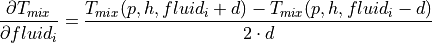
- Return type
ndarray
- tespy.tools.fluid_properties.d_mix_pT(flow, T)[source]¶
Calculate the density from pressure and temperature.
- Parameters
flow (list) – Fluid property vector containing mass flow, pressure, enthalpy and fluid composition.
T (float) – Temperature T / K.
- Returns
d – Density d / (kg/
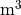
).- Return type
float
Note
Calculation for fluid mixtures.
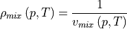
- tespy.tools.fluid_properties.d_pT(p, T, fluid)[source]¶
Calculate the density from pressure and temperature for a pure fluid.
- Parameters
p (float) – Pressure p / Pa.
T (float) – Temperature T / K.
fluid (str) – Fluid name.
- Returns
d – Density d / (kg/).
- Return type
float
- tespy.tools.fluid_properties.d_ph(p, h, fluid)[source]¶
Calculate the density from pressure and enthalpy for a pure fluid.
- Parameters
p (float) – Pressure p / Pa.
h (float) – Specific enthalpy h / (J/kg).
fluid (str) – Fluid name.
- Returns
d – Density d / (kg/).
- Return type
float
- tespy.tools.fluid_properties.dh_mix_dpQ(flow, Q)[source]¶
Calculate partial derivate of enthalpy to vapour mass fraction.
- Parameters
flow (list) – Fluid property vector containing mass flow, pressure, enthalpy and fluid composition.
Q (float) – Vapour mass fraction Q / 1.
- Returns
dh / dQ – Partial derivative of enthalpy to vapour mass fraction dh / dQ / (J/kg).
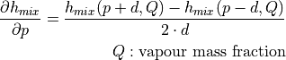
- Return type
float
Note
This works for pure fluids only!
- tespy.tools.fluid_properties.dh_mix_pdT(flow, T)[source]¶
Calculate partial derivate of enthalpy to temperature.
- Parameters
flow (list) – Fluid property vector containing mass flow, pressure, enthalpy and fluid composition.
T (float) – Temperature T / K.
- Returns
dh / dT – Partial derivative of enthalpy to temperature dh / dT / (J/(kgK)).
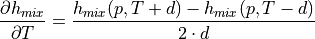
- Return type
float
- tespy.tools.fluid_properties.dh_pds_IF97(params, s)[source]¶
Calculate the derivative of enthalpy to entropy at constant pressure.
For pure fluids only, required for IF97 entropy iteration only.
- Parameters
p (float) – Pressure p / Pa.
s (float) – Specific entropy h / (J/(kgK)).
fluid (str) – Fluid name.
- Returns
dh – Derivative of specific enthalpy dh / ds / K.
- Return type
float
- tespy.tools.fluid_properties.ds_mix_pdT(flow, T)[source]¶
Calculate partial derivate of entropy to temperature.
- Parameters
flow (list) – Fluid property vector containing mass flow, pressure, enthalpy and fluid composition.
T (float) – Temperature T / K.
- Returns
ds / dT – Partial derivative of specific entropy to temperature ds / dT / (J/(kg
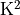
)).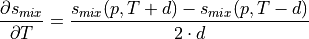
- Return type
float
- tespy.tools.fluid_properties.dv_mix_dph(flow, T0=675)[source]¶
Calculate partial derivate of specific volume to pressure.
- Parameters
flow (list) – Fluid property vector containing mass flow, pressure, enthalpy and fluid composition.
- Returns
dv / dp – Partial derivative of specific volume to pressure dv /dp / (/(Pa kg)).
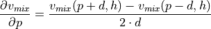
- Return type
float
- tespy.tools.fluid_properties.dv_mix_pdh(flow, T0=675)[source]¶
Calculate partial derivate of specific volume to enthalpy.
- Parameters
flow (list) – Fluid property vector containing mass flow, pressure, enthalpy and fluid composition.
- Returns
dv / dh – Partial derivative of specific volume to enthalpy dv /dh / (/J).
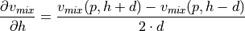
- Return type
float
- tespy.tools.fluid_properties.entropy_iteration_IF97(p, h, fluid, output)[source]¶
Calculate state in IF97 back-end via entropy iteration.
- Parameters
p (float) – Pressure p / Pa.
h (float) – Specific enthalpy h / (J/kg).
fluid (str) – Fluid name.
- Returns
T – Temperature T / K.
- Return type
float
- tespy.tools.fluid_properties.get_T_crit(fluid)[source]¶
Get critical point temperature.
- Parameters
fluid (str) – Fluid name.
- Returns
T_crit – Critical point temperature.
- Return type
float
- tespy.tools.fluid_properties.get_p_crit(fluid)[source]¶
Get critical point pressure.
- Parameters
fluid (str) – Fluid name.
- Returns
p_crit – Critical point pressure.
- Return type
float
- tespy.tools.fluid_properties.h_mix_pQ(flow, Q)[source]¶
Calculate the enthalpy from pressure and vapour mass fraction.
- Parameters
flow (list) – Fluid property vector containing mass flow, pressure, enthalpy and fluid composition.
Q (float) – Vapour mass fraction Q / 1.
- Returns
h – Specific enthalpy h / (J/kg).
- Return type
float
Note
This function works for pure fluids only!
- tespy.tools.fluid_properties.h_mix_pT(flow, T, force_gas=False)[source]¶
Calculate the enthalpy from pressure and Temperature.
- Parameters
flow (list) – Fluid property vector containing mass flow, pressure, enthalpy and fluid composition.
T (float) – Temperature of flow T / K.
- Returns
h – Enthalpy h / (J/kg).
- Return type
float
Note
Calculation for fluid mixtures.
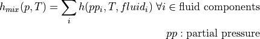
- tespy.tools.fluid_properties.h_mix_ps(flow, s, T0=675)[source]¶
Calculate the enthalpy from pressure and temperature.
- Parameters
flow (list) – Fluid property vector containing mass flow, pressure, enthalpy and fluid composition.
s (float) – Specific entropy of flow s / (J/(kgK)).
- Returns
h – Specific enthalpy h / (J/kg).
- Return type
float
Note
Calculation for fluid mixtures.
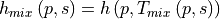
- tespy.tools.fluid_properties.h_pT(p, T, fluid, force_gas=False)[source]¶
Calculate the enthalpy from pressure and temperature for a pure fluid.
- Parameters
p (float) – Pressure p / Pa.
T (float) – Temperature T / K.
fluid (str) – Fluid name.
- Returns
h – Specific enthalpy h / (J/kg).
- Return type
float
- tespy.tools.fluid_properties.h_ps(p, s, fluid)[source]¶
Calculate the enthalpy from pressure and entropy for a pure fluid.
- Parameters
p (float) – Pressure p / Pa.
s (float) – Specific entropy h / (J/(kgK)).
fluid (str) – Fluid name.
- Returns
h – Specific enthalpy h / (J/kg).
- Return type
float
- tespy.tools.fluid_properties.h_ps_IF97(params, s)[source]¶
Calculate the enthalpy from pressure and entropy for IF97 backend.
- Parameters
fluid (str) – Fluid name.
p (float) – Pressure p / Pa.
s (float) – Specific entropy h / (J/(kgK)).
- Returns
h – Specific enthalpy h / (J/kg).
- Return type
float
- tespy.tools.fluid_properties.isentropic(inflow, outflow, T0=675)[source]¶
Calculate the enthalpy at the outlet after isentropic process.
- Parameters
inflow (list) – Inflow fluid property vector containing mass flow, pressure, enthalpy and fluid composition.
outflow (list) – Outflow fluid property vector containing mass flow, pressure, enthalpy and fluid composition.
- Returns
h_s – Enthalpy after isentropic state change.
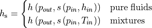
- Return type
float
- tespy.tools.fluid_properties.s_mix_pT(flow, T, force_gas=False)[source]¶
Calculate the entropy from pressure and temperature.
- Parameters
flow (list) – Fluid property vector containing mass flow, pressure, enthalpy and fluid composition.
T (float) – Temperature T / K.
- Returns
s – Specific entropy s / (J/(kgK)).
- Return type
float
Note
Calculation for fluid mixtures.
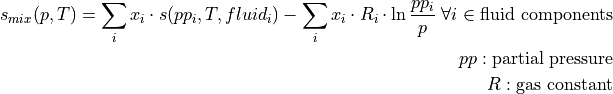
- tespy.tools.fluid_properties.s_mix_ph(flow, T0=675)[source]¶
Calculate the entropy from pressure and enthalpy.
- Parameters
flow (list) – Fluid property vector containing mass flow, pressure, enthalpy and fluid composition.
- Returns
s – Specific entropy s / (J/(kgK)).
- Return type
float
Note
First, check if fluid property has been memorised already. If this is the case, return stored value, otherwise calculate value and store it in the memorisation class.
Uses CoolProp interface for pure fluids, newton algorithm for mixtures:
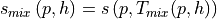
- tespy.tools.fluid_properties.s_pT(p, T, fluid, force_gas)[source]¶
Calculate the entropy from pressure and temperature for a pure fluid.
- Parameters
p (float) – Pressure p / Pa.
T (float) – Temperature T / K.
fluid (str) – Fluid name.
- Returns
s – Specific entropy s / (J/(kgK)).
- Return type
float
- tespy.tools.fluid_properties.s_ph(p, h, fluid)[source]¶
Calculate the entropy from pressure and enthalpy for a pure fluid.
- Parameters
p (float) – Pressure p / Pa.
h (float) – Specific enthalpy h / (J/kg).
fluid (str) – Fluid name.
- Returns
s – Specific entropy s / (J/(kgK)).
- Return type
float
- tespy.tools.fluid_properties.v_mix_pT(flow, T)[source]¶
Calculate the specific volume from pressure and temperature.
- Parameters
flow (list) – Fluid property vector containing mass flow, pressure, enthalpy and fluid composition.
T (float) – Temperature T / K.
- Returns
v – Specific volume v / (/kg).
- Return type
float
Note
Calculation for fluid mixtures.
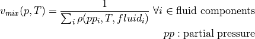
- tespy.tools.fluid_properties.v_mix_ph(flow, T0=675)[source]¶
Calculate the specific volume from pressure and enthalpy.
- Parameters
flow (list) – Fluid property vector containing mass flow, pressure, enthalpy and fluid composition.
- Returns
v – Specific volume v / (/kg).
- Return type
float
Note
First, check if fluid property has been memorised already. If this is the case, return stored value, otherwise calculate value and store it in the memorisation class.
Uses CoolProp interface for pure fluids, newton algorithm for mixtures:
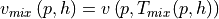
- tespy.tools.fluid_properties.visc_mix_pT(flow, T)[source]¶
Calculate dynamic viscosity from pressure and temperature.
- Parameters
flow (list) – Fluid property vector containing mass flow, pressure, enthalpy and fluid composition.
T (float) – Temperature T / K.
- Returns
visc – Dynamic viscosity visc / Pa s.
- Return type
float
- tespy.tools.fluid_properties.visc_mix_ph(flow, T0=675)[source]¶
Calculate the dynamic viscorsity from pressure and enthalpy.
- Parameters
flow (list) – Fluid property vector containing mass flow, pressure, enthalpy and fluid composition.
- Returns
visc – Dynamic viscosity visc / Pa s.
- Return type
float
Note
First, check if fluid property has been memorised already. If this is the case, return stored value, otherwise calculate value and store it in the memorisation class.
Uses CoolProp interface for pure fluids, newton algorithm for mixtures:
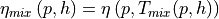
tespy.tools.helpers module¶
Module for helper functions used by several other modules.
This file is part of project TESPy (github.com/oemof/tespy). It’s copyrighted by the contributors recorded in the version control history of the file, available from its original location tespy/tools/helpers.py
SPDX-License-Identifier: MIT
- exception tespy.tools.helpers.TESPyComponentError[source]¶
Bases:
ExceptionCustom message for component related errors.
- exception tespy.tools.helpers.TESPyConnectionError[source]¶
Bases:
ExceptionCustom message for connection related errors.
- exception tespy.tools.helpers.TESPyNetworkError[source]¶
Bases:
ExceptionCustom message for network related errors.
- class tespy.tools.helpers.UserDefinedEquation(label, func, deriv, conns, params={}, latex={})[source]¶
Bases:
objectA UserDefinedEquation allows use of generic user specified equations.
- Parameters
label (str) – Label of the user defined function.
func (function) – Equation to evaluate.
deriv (function) – Partial derivatives of the equation.
conns (list) – List of connections used by the function.
params (dict) – Dictionary containing keyword arguments required by the function and/or derivative.
latex (dict) – Dictionary holding LaTeX string of the equation as well as CharLine and CharMap instances applied in the equation for the automatic model documentation module.
Example
Consider a pipeline transporting hot water with measurement data on temperature reduction in the pipeline as function of volumetric flow. First, we set up the TESPy model. Additionally, we will import the
tespy.tools.helpers.UserDefinedEquationclass as well as some fluid property functions. We specify fluid property information for the inflow and assume that no pressure losses occur in the pipeline.>>> from tespy.components import Source, Sink, Pipe >>> from tespy.networks import Network >>> from tespy.connections import Connection >>> from tespy.tools.helpers import UserDefinedEquation >>> from tespy.tools import CharLine >>> from tespy.tools.fluid_properties import T_mix_ph, v_mix_ph >>> nw = Network(fluids=['water'], p_unit='bar', T_unit='C') >>> nw.set_attr(iterinfo=False) >>> so = Source('source') >>> si = Sink('sink') >>> pipeline = Pipe('pipeline') >>> inflow = Connection(so, 'out1', pipeline, 'in1') >>> outflow = Connection(pipeline, 'out1', si, 'in1') >>> nw.add_conns(inflow, outflow) >>> inflow.set_attr(T=120, p=10, v=1, fluid={'water': 1}) >>> pipeline.set_attr(pr=1)
Let’s assume, the temperature reduction is measured from inflow and outflow temperature. The mathematical description of the relation we want the model to follow therefore is:
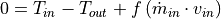
We can define a function, describing exactly that relation using a
tespy.tools.characteristics.CharLineobject with volumetric flow as input values and temperature drop as output values. The function should look like this:>>> def myfunc(ude): ... char = ude.params['char'] ... return ( ... T_mix_ph(ude.conns[0].get_flow()) - ... T_mix_ph(ude.conns[1].get_flow()) - char.evaluate( ... ude.conns[0].m.val_SI * ... v_mix_ph(ude.conns[0].get_flow())) ... )
The function does only take one parameter, we name it
udein this case. This parameter will hold all relevant information you pass to your UserDefinedEquation later, i.e. a list of the connections (.conns) required by the UserDefinedEquation as well as a dictionary of arbitrary parameters required for your function (.params). The index of the.connsindicates the position of the connection in the list of connections required for the UserDefinedEquation (see below).On top of the equation the solver requires its derivatives with respect to all relevant primary variables of the network, which are mass flow pressure, enthalpy and fluid composition. In this case, the derivatives to the mass flow, pressure and enthalpy of the inflow as well as the derivatives to the pressure and enthalpy of the outflow will be required. Similar to the equation definition, define a function returning the corresponding jacobian matrix. The jacobian is a dictionary containing numpy arrays for every connection. Therefore the first key is the connection you want to calculate the derivative for and the second key is the index of the variable in the jacobian. The indices correspond to
0: mass flow
1: pressure
2: enthalpy
3 until end (
3:): fluid composition
We can calculate the derivatives numerically, if an easy analytical solution is not available. Simply use the
numeric_derivmethod passing the variable (‘m’, ‘p’, ‘h’, ‘fluid’) as well as the connection’s index.>>> def myjacobian(ude): ... ude.jacobian[ude.conns[0]][0] = ude.numeric_deriv('m', 0) ... ude.jacobian[ude.conns[0]][1] = ude.numeric_deriv('p', 0) ... ude.jacobian[ude.conns[0]][2] = ude.numeric_deriv('h', 0) ... ude.jacobian[ude.conns[1]][1] = ude.numeric_deriv('p', 1) ... ude.jacobian[ude.conns[1]][2] = ude.numeric_deriv('h', 1) ... return ude.jacobian
After that, we only need to th specify the characteristic line we want out temperature drop to follow as well as create the UserDefinedEquation instance and add it to the network. Its equation is automatically applied. We apply extrapolation for the characteristic line as it helps with convergence, in case a paramter
>>> char = CharLine( ... x=[0.1, 0.2, 0.3, 0.4, 0.5, 0.6, 0.7, 0.8, 0.9, 1.0, 2.0, 3.0], ... y=[17, 12, 9, 6.5, 4.5, 3, 2, 1.5, 1.25, 1.125, 1.1, 1.05], ... extrapolate=True) >>> my_ude = UserDefinedEquation( ... 'myudelabel', myfunc, myjacobian, [inflow, outflow], ... params={'char': char}) >>> nw.add_ude(my_ude) >>> nw.solve('design')
Clearly the result is obvious here as the volumetric flow is exactly at one of the supporting points.
>>> round(inflow.T.val - outflow.T.val, 3) 1.125
So now, let’s say, we want to calculate the volumetric flow necessary to at least maintain a specific temperature at the outflow.
>>> inflow.set_attr(v=None) >>> outflow.set_attr(T=110) >>> nw.solve('design') >>> round(inflow.v.val, 3) 0.267
Or calculate volumetric flow and/or temperature drop corresponding to a specified heat loss.
>>> outflow.set_attr(T=None) >>> pipeline.set_attr(Q=-5e6) >>> nw.solve('design') >>> round(inflow.v.val, 3) 0.067
- numeric_deriv(param, idx)[source]¶
Calculate partial derivative of the function func to dx numerically.
- Parameters
param (str) – Parameter to calculate partial derivative for.
idx (int) – Position of the connection to calculate the partial derivative for within the list of the connections
conns.
- Returns
deriv – Partial derivative(s) of the function
 to variable(s)
to variable(s)
 .
.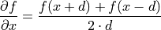
- Return type
float/list
- tespy.tools.helpers.blasius(re)[source]¶
Calculate friction coefficient according to Blasius.
- Parameters
re (float) – Reynolds number.
- Returns
darcy_friction_factor – Darcy friction factor.
- Return type
float
- tespy.tools.helpers.bus_char_derivative(params, bus_value)[source]¶
Calculate derivative for bus char evaluation.
- tespy.tools.helpers.bus_char_evaluation(params, bus_value)[source]¶
Calculate the value of a bus.
- Parameters
comp_value (float) – Value of the energy transfer at the component.
reference_value (float) – Value of the bus in reference state.
char_func (tespy.tools.characteristics.char_line) – Characteristic function of the bus.
- Returns
residual – Residual of the equation.
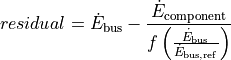
- Return type
float
- tespy.tools.helpers.colebrook(params, darcy_friction_factor)[source]¶
Calculate friction coefficient accroding to Colebrook-White equation.
Applied in transition zone and rough conditions.
- Parameters
re (float) – Reynolds number.
ks (float) – Equivalent sand roughness.
d (float) – Pipe’s diameter.
darcy_friction_factor (float) – Darcy friction factor.
- Returns
darcy_friction_factor – Darcy friction factor.
- Return type
float
- tespy.tools.helpers.colebrook_derivative(params, darcy_friction_factor)[source]¶
Calculate derivative for Colebrook-White equation.
- tespy.tools.helpers.convert_from_SI(property, SI_value, unit)[source]¶
Get a value in the network’s unit system from SI value.
- Parameters
property (str) – Fluid property to convert.
SI_value (float) – SI value to convert.
unit (str) – Unit of the value.
- Returns
value – Specified fluid property value in network’s unit system.
- Return type
float
- tespy.tools.helpers.convert_to_SI(property, value, unit)[source]¶
Convert a value to its SI value.
- Parameters
property (str) – Fluid property to convert.
value (float) – Value to convert.
unit (str) – Unit of the value.
- Returns
SI_value – Specified fluid property in SI value.
- Return type
float
- tespy.tools.helpers.darcy_friction_factor(re, ks, d)[source]¶
Calculate the Darcy friction factor.
- Parameters
re (float) – Reynolds number re / 1.
ks (float) – Pipe roughness ks / m.
d (float) – Pipe diameter/characteristic lenght d / m.
- Returns
darcy_friction_factor – Darcy friction factor
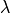
/ 1- Return type
float
Note
Laminar flow (
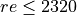
)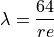
turbulent flow (
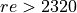
)hydraulically smooth:
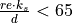
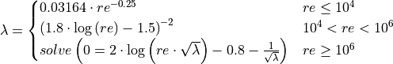
transition zone and hydraulically rough:
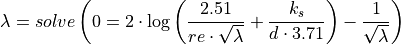
Reference: [Nir18].
Example
Calculate the Darcy friction factor at different hydraulic states.
>>> from tespy.tools.helpers import darcy_friction_factor >>> ks = 5e-5 >>> d = 0.05 >>> re_laminar = 2000 >>> re_turb_smooth = 5000 >>> re_turb_trans = 70000 >>> re_high = 1000000 >>> d_high = 0.8 >>> re_very_high = 6000000 >>> d_very_high = 1 >>> ks_low = 1e-5 >>> ks_rough = 1e-3 >>> darcy_friction_factor(re_laminar, ks, d) 0.032 >>> round(darcy_friction_factor(re_turb_smooth, ks, d), 3) 0.038 >>> round(darcy_friction_factor(re_turb_trans, ks, d), 3) 0.023 >>> round(darcy_friction_factor(re_turb_trans, ks_rough, d), 3) 0.049 >>> round(darcy_friction_factor(re_high, ks, d_high), 3) 0.012 >>> round(darcy_friction_factor(re_very_high, ks_low, d_very_high), 3) 0.009
- tespy.tools.helpers.extend_basic_path(subfolder)[source]¶
Return a path based on the basic tespy path and creates it if necessary.
The subfolder is the name of the path extension.
- tespy.tools.helpers.fluid_structure(fluid)[source]¶
Return the checmical formula of fluid.
- Parameters
fluid (str) – Name of the fluid.
- Returns
parts – Dictionary of the chemical base elements as keys and the number of atoms in a molecule as values.
- Return type
dict
Example
Get the chemical formula of methane.
>>> from tespy.tools.helpers import fluid_structure >>> elements = fluid_structure('methane') >>> elements['C'], elements['H'] (1, 4)
- tespy.tools.helpers.get_basic_path()[source]¶
Return the basic tespy path and creates it if necessary.
The basic path is the ‘.tespy’ folder in the $HOME directory.
- tespy.tools.helpers.hanakov(re)[source]¶
Calculate friction coefficient according to Hanakov.
- Parameters
re (float) – Reynolds number.
- Returns
darcy_friction_factor – Darcy friction factor.
- Return type
float
- tespy.tools.helpers.latex_unit(unit)[source]¶
Convert unit to LaTeX.
- Parameters
unit (str) – Value of unit for input, e.g.
m3 / kg.- Returns
unit – Value of unit for output, e.g.
$\unitfrac{m3}{kg}$.- Return type
str
- tespy.tools.helpers.merge_dicts(dict1, dict2)[source]¶
Return a new dictionary by merging two dictionaries recursively.
- tespy.tools.helpers.modify_path_os(path)[source]¶
Modify a path according the os.
Also detects weather the path specification is absolute or relative and adjusts the path respectively.
- Parameters
path (str) – Path to modify.
- Returns
path – Modified path.
- Return type
str
- tespy.tools.helpers.molar_mass_flow(flow)[source]¶
Calculate molar mass flow.
- Parameters
flow (list) – Fluid property vector containing mass flow, pressure, enthalpy and fluid composition.
- Returns
m_m – Molar mass flow m_m / (mol/s).
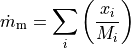
- Return type
float
- tespy.tools.helpers.nested_OrderedDict(dictionary)[source]¶
Create a nested OrderedDict from a nested dict. :param dictionary: Nested dict. :type dictionary: dict
- Returns
dictionary – Nested OrderedDict.
- Return type
collections.OrderedDict
- tespy.tools.helpers.newton(func, deriv, params, y, **kwargs)[source]¶
Find zero crossings with 1-D newton algorithm.
- Parameters
func (function) – Function to find zero crossing in,
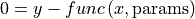
.deriv (function) – First derivative of the function.
params (list) – Additional parameters for function, optional.
y (float) – Target function value.
val0 (float) – Starting value, default: val0=300.
valmin (float) – Lower value boundary, default: valmin=70.
valmax (float) – Upper value boundary, default: valmax=3000.
max_iter (int) – Maximum number of iterations, default: max_iter=10.
tol_rel (float) – Maximum relative tolerance
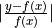
, default value: 1e-6.tol_abs (float) – Maximum absolute tolerance
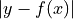
, default value: 1e-6.tol_mode (str) –
Check for relative, absolute or both tolerances:
tol_mode='abs'(default)tol_mode='rel'tol_mode='both'
- Returns
val – x-value of zero crossing.
- Return type
float
Note
Algorithm
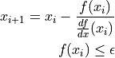
- tespy.tools.helpers.num_fluids(fluids)[source]¶
Return number of fluids in fluid mixture.
- Parameters
fluids (dict) – Fluid mass fractions.
- Returns
n – Number of fluids in fluid mixture n / 1.
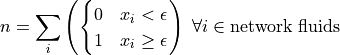
- Return type
int
- tespy.tools.helpers.prandtl_karman(params, darcy_friction_factor)[source]¶
Calculate friction coefficient according to Prandtl and v. Kármán.
Applied in smooth conditions.
- Parameters
re (float) – Reynolds number.
darcy_friction_factor (float) – Darcy friction factor.
- Returns
darcy_friction_factor – Darcy friction factor.
- Return type
float
- tespy.tools.helpers.prandtl_karman_derivative(params, darcy_friction_factor)[source]¶
Calculate derivative for Prandtl and v. Kármán equation.
- tespy.tools.helpers.reverse_2d(params, y)[source]¶
Calculate the residual value of an inverse function.
- Parameters
params (list) – Variable function parameters.
y (float) – Function value of function
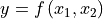
.
- Returns
deriv – Residual value of inverse function
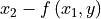
.- Return type
float
tespy.tools.logger module¶
Module for logging specification.
This file is part of project TESPy (github.com/oemof/tespy). It’s copyrighted by the contributors recorded in the version control history of the file, available from its original location tespy/tools/logger.py
SPDX-License-Identifier: MIT
- tespy.tools.logger.check_git_branch()[source]¶
Pass the used branch and commit to the logger.
The following test reacts on a local system different than on Travis-CI. Therefore, a try/except test is created.
Example
>>> from tespy import logger >>> try: ... v = logger.check_git_branch() ... except FileNotFoundError: ... v = 'dsfafasdfsdf' >>> type(v) <class 'str'>
- tespy.tools.logger.check_version()[source]¶
Return the actual version number of the used TESPy version.
Example
>>> from tespy.tools import logger >>> v = logger.check_version() >>> int(v.split('.')[0]) 0
- tespy.tools.logger.define_logging(logpath=None, logfile='tespy.log', file_format=None, screen_format=None, file_datefmt=None, screen_datefmt=None, screen_level=20, file_level=10, log_version=True, log_path=True, timed_rotating=None)[source]¶
Initialise customisable logger.
- Parameters
logfile (str) – Name of the log file, default: tespy.log
logpath (str) – The path for log files. By default a “.tespy’ folder is created in your home directory with subfolder called ‘log_files’.
file_format (str) – Format of the file output. Default: “%(asctime)s - %(levelname)s - %(module)s - %(message)s”
screen_format (str) – Format of the screen output. Default: “%(asctime)s-%(levelname)s-%(message)s”
file_datefmt (str) – Format of the datetime in the file output. Default: None
screen_datefmt (str) – Format of the datetime in the screen output. Default: “%H:%M:%S”
screen_level (int) – Level of logging to stdout. Default: 20 (logging.INFO)
file_level (int) – Level of logging to file. Default: 10 (logging.DEBUG)
log_version (boolean) – If True the actual version or commit is logged while initialising the logger.
log_path (boolean) – If True the used file path is logged while initialising the logger.
timed_rotating (dict) – Option to pass parameters to the TimedRotatingFileHandler.
- Returns
file – Place where the log file is stored.
- Return type
str
Notes
By default the WARNING level is printed on the screen and the DEBUG level in a file, but you can easily configure the logger. Every module that wants to create logging messages has to import the logging module. The oemof logger module has to be imported once to initialise it.
Examples
To define the default logger you have to import the python logging library and this function. The first logging message should be the path where the log file is saved to.
>>> import logging >>> from tespy.tools import logger >>> mypath = logger.define_logging( ... log_path=True, log_version=True, timed_rotating={'backupCount': 4}, ... screen_level=logging.ERROR, screen_datefmt = "no_date") >>> mypath[-9:] 'tespy.log' >>> logging.debug('Hi')